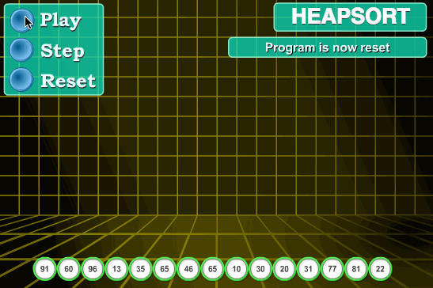

7. 排序算法
- 比较排序
插入排序
选择排序
冒泡排序
快速排序
堆排序
归并排序
希尔排序
- 非比较排序
计数排序
桶排序
基数排序
{kind=link}
稳定性 ：键值相同的元素在排序之后仍能保持原来的相对顺序。
空间复杂度 ：算法的额外内存开销，不包括输入所占空间。
in-place ：原位运算，直接在输入数组/链表的基础上修改。
k ：计数排序/桶排序，桶的个数；基数排序，关键字位数。
7.1. 插入排序

\(\color{darkgreen}{Code}\)
1template<class T>
2void insertionSort(T* arr, int len)
3{
4 if(!arr) return;
5 for(int i = 1; i < len; ++i)
6 {
7 int j = i;
8 while(j > 0 && arr[j] < arr[j-1])
9 {
10 swap(arr[j], arr[j-1]);
11 -- j;
12 }
13 }
14}
7.2. 选择排序

\(\color{darkgreen}{Code}\)
1template<class T>
2void selectionSort(T* arr, int len)
3{
4 if(!arr) return;
5 for(int i = 0; i < len - 1; ++i)
6 {
7 int k = i;
8 for(int j = i+1; j < len; ++j)
9 {
10 if(arr[j] < arr[k]) k = j;
11 }
12 swap(arr[i], arr[k]);
13 }
14}
7.3. 冒泡排序

\(\color{darkgreen}{Code}\)
1// 下起泡：大的数下沉
2template<class T>
3void bubbleSort(T* arr, int len)
4{
5 if(!arr) return;
6 for(int i = 1; i < len; ++i)
7 {
8 for(int j = 0; j < len - i; ++j)
9 {
10 if(arr[j] > arr[j+1]) swap(arr[j], arr[j+1]);
11 }
12 }
13}
1// 上起泡：小的数上浮
2template<class T>
3void bubbleSort(T* arr, int len)
4{
5 if(!arr) return;
6 for(int i = 0; i < len - 1; ++i)
7 {
8 for(int j = len - 1; j > i; --j)
9 {
10 if(arr[j] < arr[j-1]) swap(arr[j], arr[j-1]);
11 }
12 }
13}
7.4. 快速排序

\(\color{darkgreen}{Code}\)
1// 全闭区间 [start, end]
2template<class T>
3int partion(T* arr, int start, int end)
4{
5 T p = arr[start]; // pivot
6 int left = start;
7 int right = end + 1;
8 while(true)
9 {
10 while(arr[++left] < p && left < end);
11 while(arr[--right] > p);
12 if(left >= right) break;
13 swap(arr[left], arr[right]);
14 }
15 swap(arr[start], arr[right]);
16 return right;
17}
18
19template<class T>
20void quickSort(T* arr, int start, int end)
21{
22 if(!arr || start >= end) return;
23 int p = partion(arr, start, end);
24 if(p > start + 1) quickSort(arr, start, p-1);
25 if(p < end - 1) quickSort(arr, p+1, end);
26}
快速排序的空间复杂度是 \(\mathcal{O}(\log n)\) ，用于保存递归的函数栈，最差情况下为 \(\mathcal{O}(n)\) 。
7.5. 堆排序
{kind=link}
建堆，从 最后一个非叶子节点 开始调整，使其成为大顶堆；将堆顶元素放到数组末尾；最后一个叶子节点放到堆顶，重新调整堆；…。
\(\color{darkgreen}{Code}\)
1// 调整堆。区间 [start, end]，除了 start 不满足大顶堆的性质之外，其他节点都满足。
2template<class T>
3void heapAdjust(T* arr, int start, int end)
4{
5 T tmp = arr[start];
6 for(int i = 2*start+1; i <= end; i = 2*i + 1)
7 {
8 if(i < end) i = arr[i] > arr[i+1] ? i: i+1;
9 if(arr[i] < tmp) break;
10 arr[start] = arr[i];
11 start = i;
12 }
13 arr[start] = tmp;
14}
15
16// 某节点下标为 i，则其左右子节点的下标分别为：2*i+1，2*i+2 。
17template<class T>
18void heapSort(T* arr, int len)
19{
20 if(!arr) return;
21 for(int k = (len-1-1)/2; k>=0; --k) heapAdjust(arr, k, len-1);
22 for(int i = 1; i <= len; ++i)
23 {
24 swap(arr[0], arr[len-i]);
25 heapAdjust(arr, 0, len-1-i);
26 }
27}
初始建立大顶堆的时间复杂度为 \(\mathcal{O}(n \log n)\) ；每次取出堆的最大元素并重新调整堆也要用 \(\mathcal{O}(\log n)\) 时间。
7.6. 归并排序

\(\color{darkgreen}{Code}\)
1// 把有序表 from: [start, mid] 和 from: [mid+1, end] 合并到临时数组 to: [start, end]。
2template<class T>
3void merge(T* from, T* to, int start, int mid, int end)
4{
5 int i, j, k;
6 for(i = start, j = mid+1, k = start; i <= mid && j <= end; ++k)
7 {
8 if(from[i] < from[j]) to[k] = from[i++];
9 else to[k] = from[j++];
10 }
11 for(;i <= mid; ) to[k++] = from[i++];
12 for(;j <= end; ) to[k++] = from[j++];
13}
14
15template<class T>
16void mergeSort(T* arr, T* atmp, int start, int end)
17{
18 if(start == end) return;
19 int mid = start + (end - start) / 2;
20 mergeSort(arr, atmp, start, mid);
21 mergeSort(arr, atmp, mid+1, end);
22 merge(arr, atmp, start, mid, end);
23 for(int i = start; i <= end; ++i) arr[i] = atmp[i];
24}
25
26template<class T>
27void mergeSort(T* arr, int start, int end)
28{
29 if(!arr) return;
30 T* atmp = new T[MAX_LEN]; // 申请临时空间
31 fill(atmp, atmp + MAX_LEN, -1);
32 mergeSort(arr, atmp, start, end);
33 delete[] atmp;
34}
1/* 非递归形式：2-路归并 */
2
3// 依次把相邻的两个长度为 gap 的子数组合并为长度为 2*gap 的数组（调用 merge 函数）
4template<class T>
5void mergePass(T* arr, T* atmp, int n, int gap)
6{
7 int start = 0;
8 while (start + 2 * gap < n)
9 {
10 merge(arr, atmp, start, start + gap - 1, start + 2 * gap - 1);
11 start += 2 * gap;
12 }
13 if (start + gap - 1 < n - 1) merge(arr, atmp, start, start + gap - 1, n - 1); // 最后的两个子数组不等长，一个长为 gap ，一个长小于 gap
14 else // 只剩下一个子数组
15 {
16 for (int j = start; j < n; ++j) atmp[j] = arr[j];
17 }
18}
19
20template<class T>
21void mergeSort(T* arr, int n)
22{
23 if (!arr || n <= 1) return;
24 T* atmp = new T[n];
25 int gap = 1;
26 while (gap < n)
27 {
28 mergePass(arr, atmp, n, gap);
29 for (int i = 0; i < n; ++i) arr[i] = atmp[i];
30 gap *= 2;
31 }
32 delete[] atmp;
33}
7.7. 希尔排序

缩小增量排序法：对于每一个增量（步长），利用插入排序方法进行排序。如果序列是基本有序的，使用直接插入排序效率非常高。
\(\color{darkgreen}{Code}\)
1template<class T>
2void insertSort(T* arr, int start, int gap, int len)
3{
4 for(int i = start + gap; i < len; i += gap)
5 {
6 int j = i;
7 while(j >= gap && arr[j] > arr[j - gap])
8 {
9 swap(arr[j], arr[j - gap]);
10 j -= gap;
11 }
12 }
13}
14
15template<class T>
16void shellSort(T* arr, int len)
17{
18 if(!arr) return;
19 for(int gap = len/2; gap >= 1; gap /= 2)
20 {
21 for(int start = 0; start < gap; ++ start) insertSort(arr, start, gap, len);
22 }
23}
7.8. 计数排序

\(\color{darkgreen}{Code}\)
1// 空间复杂度 O(n+k)
2void Sort(vector<int> &arr, int maxVal)
3{
4 int len = arr.size();
5 if (len < 1) return;
6
7 vector<int> count(maxVal + 1, 0);
8 vector<int> tmp(arr);
9
10 for (auto x : arr) count[x]++;
11
12 partial_sum(count.begin(), count.end(), count.begin());
13
14 for (int i = len - 1; i >= 0; --i)
15 {
16 int val = tmp[i];
17 arr[count[val] - 1] = val;
18 count[val]--;
19 }
20}
21
22// 空间复杂度 O(k)
23void Sort(vector<int> &arr, int maxVal)
24{
25 int len = arr.size();
26 if (len < 1) return;
27
28 vector<int> count(maxVal + 1, 0);
29
30 for (auto x : arr) count[x]++;
31
32 int i = 0;
33 for (int x = 0; x <= maxVal; ++x)
34 {
35 while (count[x]-- > 0) arr[i++] = x;
36 }
37}
7.9. 桶排序

参考：https://blog.csdn.net/developer1024/article/details/79770240
\(\color{darkgreen}{Code}\)
1#include<iterator>
2#include<iostream>
3#include<vector>
4using namespace std;
5const int BUCKET_NUM = 10;
6
7struct ListNode
8{
9 explicit ListNode(int i=0):mData(i),mNext(NULL){}
10 ListNode* mNext;
11 int mData;
12};
13
14ListNode* insert(ListNode* head,int val)
15{
16 ListNode dummyNode;
17 ListNode *newNode = new ListNode(val);
18 ListNode *pre,*curr;
19 dummyNode.mNext = head;
20 pre = &dummyNode;
21 curr = head;
22 while(NULL!=curr && curr->mData<=val)
23 {
24 pre = curr;
25 curr = curr->mNext;
26 }
27 newNode->mNext = curr;
28 pre->mNext = newNode;
29 return dummyNode.mNext;
30}
31ListNode* merge(ListNode *head1,ListNode *head2)
32{
33 ListNode dummyNode;
34 ListNode *dummy = &dummyNode;
35 while(NULL!=head1 && NULL!=head2)
36 {
37 if(head1->mData <= head2->mData)
38 {
39 dummy->mNext = head1;
40 head1 = head1->mNext;
41 }
42 else
43 {
44 dummy->mNext = head2;
45 head2 = head2->mNext;
46 }
47 dummy = dummy->mNext;
48 }
49 if(NULL!=head1) dummy->mNext = head1;
50 if(NULL!=head2) dummy->mNext = head2;
51
52 return dummyNode.mNext;
53}
54void bucketSort(int n,int arr[])
55{
56 vector<ListNode*> buckets(BUCKET_NUM,(ListNode*)(0));
57
58 // 插入桶中
59 for(int i=0;i<n;++i)
60 {
61 int index = arr[i]/BUCKET_NUM;
62 ListNode *head = buckets.at(index);
63 buckets.at(index) = insert(head,arr[i]);
64 }
65
66 // 合并各个桶中的排序结果
67 ListNode *head = buckets.at(0);
68 for(int i=1;i<BUCKET_NUM;++i)
69 {
70 head = merge(head,buckets.at(i));
71 }
72
73 // 结果输出到 arr
74 for(int i=0;i<n;++i)
75 {
76 arr[i] = head->mData;
77 head = head->mNext;
78 }
79}
- 时间复杂度
对于 \(n\) 个待排数据， \(k\) 个桶，平均每个桶 \(\frac{n}{k}\) 个数据，桶内排序复杂度为 \(\mathcal{O}(\frac{n}{k} \log \frac{n}{k})\) ，总体平均时间复杂度为：
\[\mathcal{O}(n) + \mathcal{O}(k * \frac{n}{k} \log \frac{n}{k}) = \mathcal{O}(n + n(\log n - \log k)).\]当 \(n = k\) ，每个桶只有一个数据，时间复杂度为 \(\mathcal{O}(n)\) 。
7.10. 基数排序

\(\color{darkgreen}{Code}\)
1// digit 表示关键字位数
2void radixSort(int* arr, int len, int digit)
3{
4 if(!arr) return;
5
6 vector<vector<int>> radix(10, vector<int>{});
7 int order = 1;
8 while(digit--)
9 {
10 for(int i = 0; i < len; ++i)
11 {
12 int idx = (arr[i] / order) % 10;
13 radix[idx].emplace_back(arr[i]);
14 }
15
16 int k = 0;
17 for(int i = 0; i < 10; ++i)
18 {
19 int j = 0;
20 while (j < radix[i].size()) arr[k++] = radix[i][j++];
21 while (j--) radix[i].pop_back();
22 }
23
24 order *= 10;
25 }
26}
7.11. 总结
从平均时间来看，快速排序 是效率最高的，但快速排序在最坏情况下的时间性能不如堆排序和归并排序。
在 \(n\) 较大时 归并排序 使用时间较少，但使用辅助空间较多。
当序列基本有序或 \(n\) 较小时，直接 插入排序 是好的方法，因此常将它和其他的排序方法（如快速排序、归并排序等）结合在一起使用。
选择排序 、 堆排序 、 快速排序 、 希尔排序 是不稳定的排序方法。
基数排序 适用于 \(n\) 较大而关键字位数较少的情况。
计数排序 适用于 \(n\) 较大而数值分布区间较小的情况。
如果我们只希望找到数组中前 \(k\) 大的元素，且 \(k\) 很小，则 堆排序 速度较快。
7.12. 参考资料
十大经典排序算法（动图演示）
十大经典排序算法
10大经典排序算法动图演示